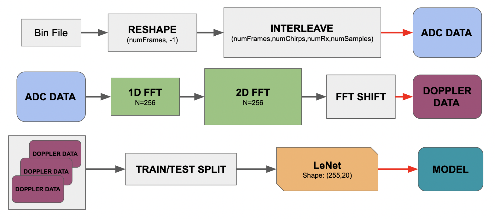

Weather-Wind Project
Goal: Understand the effects of wind on electromagnetic signals at 77GHz using FMCW radars.
Summary
In order to understand the effects of wind on radar signals we must perform experiments where there is wind in the middle of a radar channel. From these experiments, we analyze the data collected and try to see if there is a way that we can predict or detect the wind given some data from these experiments. This is a topic of interest because there is not much literature regarding wind's effects on radar. In order to predict or detect the wind, I designed a machine learning model that, when given some data from an experiment, can successfuly classify the speed of the wind crossing the radar channel and the direction it is coming from.
Intro
We collect radar measurements in the lab with a fan at different orientations and wind speeds. The goal is to transform this data and feed it into an image classifier that can determine the orientation and wind speed the data was taken with. We transform this data by applying a series of operations (interleaving, Fourier transforms) to get microDoppler plots which we treat as 20x255 pixel images. These images are then used as training/testing for a LeNet architecture machine learning model.
Process
- Collect radar measurements in the lab with a fan at different orientations and wind speeds
- Appropriately shape/manipulate this raw ADC data to visualize a potential effect of wind on the radar signal
- Feed the transformed data into a classifier model that can predict the wind speed and orientation of the environment that the data was collected in
